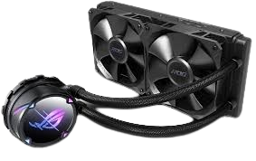

-

Asus, fondata nel 1989, è un marchio taiwanese noto per l'innovazione nell'hardware per computer. Nel raffreddamento, offre dissipatori e ventole progettati per massimizzare le prestazioni e ridurre il rumore. Le soluzioni della serie ROG e TUF sono apprezzate per l'efficienza termica e il design all'avanguardia, ideali per gamers e appassionati di overclocking.